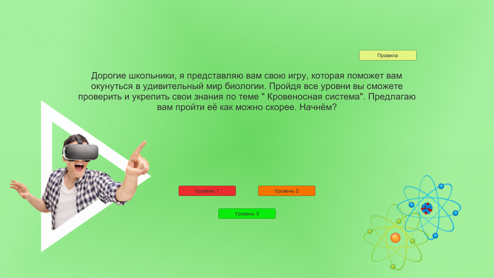
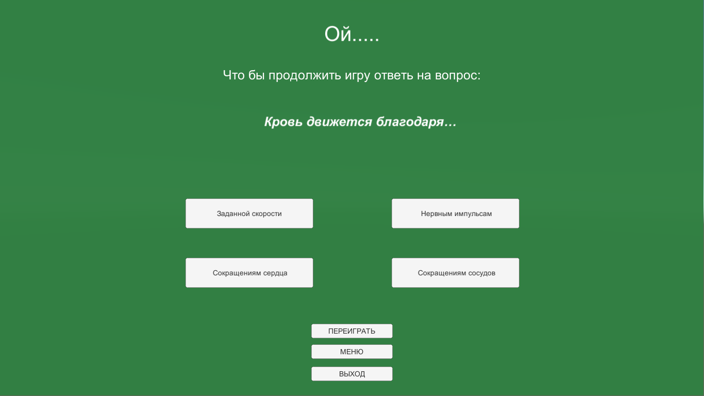

Биологический квиз
В наше время компьютерные игры – это место уединения, где человек может расслабиться, отвлечься от реальной жизни на некоторое время, выпустить агрессию. Самая первая компьютерная игра была выпущена в 1962 году на основе простой программы. Зарождение игровой индустрии началось в 1970-х годах одновременно с продажей первых компьютеров, рассчитанных на массового потребителя. За 50 лет индустрия компьютерных игр развилась до таких масштабов, что уже игры выпускаются тысячными тиражами. Появился такой вид спорта, как киберспорт, в котором участники соревнуются, играя в ту или иную игру. В настоящее время решается вопрос о добавлении киберспорта в список олимпийских игр.
Итак, прежде чем преступить к игре, необходимо выбрать уровень. Помни что от твоего выбора будет зависеть не только сложность прохождения игры, но и сложность вопросов в конце.
После того как ты выбрал уровень, тебя ждет увлекательная игра, суть которой аккурат проехать как можно больше, не врезавшись в препядствие.
Ой... Кажется что-то пошло не так и ты всё-таки столкнулся с препядствием. Не перживай, ты сможешь начать игру заново как только правильно ответишь на несколько моих вопросов.
Для того чтобы ты понял правильный ты дал ответ или нет, я покажу тебе это цветом. Если твой ответ загорелся зелёным - поздравляю, ты молодец! Но если горит красный, то тебе стоит подумать получше.